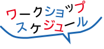
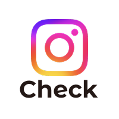
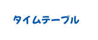
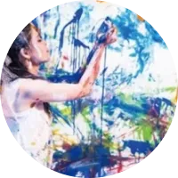
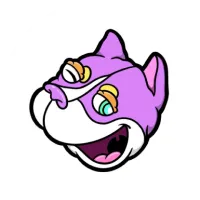

- 吉永友里氏と描く
未来の福岡×西鉄バス - NONCHELEEE氏と描く
未来の福岡×西鉄電車 - カラリズムリサ氏と描く
未来の福岡×福岡市営地下鉄 - QP氏と描く未来の福岡×JR九州
- QP氏とつくる
ダンボールアート×福岡市美術館 - 宮田ちひろ氏と描く
未来の福岡×博多駅
吉永友里氏と描く未来の福岡×西鉄バス
@福岡市立 城西中学校

-
受付開始
-
ワークショップ開始
-
ワークショップ終了
-
集合写真撮影
吉永 友里
福岡市在住・画家。株式会社YURIWORLD代表取締役社長。
福岡伝説の店『エドマッチョ』の経営
を経て、画家として活躍中。

最新の作品や活動内容は、
公式Instagramよりご確認ください。
NONCHELEEE氏と描く未来の福岡×西鉄電車
@福岡市立 舞鶴中学校

-
受付開始
-
ワークショップ開始
-
ワークショップ終了
-
集合写真撮影
NONCHELEEE
福岡市在住。どこか「間抜けで愛嬌の
ある表情」のキャラクターたちが特徴。
一度見たら忘れられない、クセになる
インパクトとポップさを持っています。
カラリズムリサ氏と描く未来の福岡×福岡市営地下鉄
@福岡市立 城西中学校
(西唐津〜福岡空港線 車内)
-
受付開始
-
ワークショップ開始
-
ワークショップ終了
-
集合写真撮影

カラリズムリサ
福岡県出身。
二度と同じものは生まれない
ライブ感あふれる「必然と偶然の交差」
が、彼女の魅力です。
QP氏と描く未来の福岡×JR九州
@福岡市美術館 アートスタジオ
(博多〜小倉 車内)
-
受付開始
-
ワークショップ開始
-
ワークショップ終了
-
集合写真撮影

QP
飯塚市在住・画家。紫の犬の「パープル」を中心に、 自身の経験した感情や周囲との繋がりを鮮やかな色彩で描き出すアーティストです。
QP氏とつくるダンボールアート×福岡市美術館
@福岡市美術館 アートスタジオ
-
受付開始
-
ワークショップ開始
-
ワークショップ終了
-
集合写真撮影
QP
飯塚市在住・画家。紫の犬の「パープル」を中心に、 自身の経験した感情や周囲との繋がりを鮮やかな色彩で描き出すアーティストです。
宮田ちひろ氏と描く未来の福岡×博多駅
@福岡市美術館 アートスタジオ
-
受付開始
-
ワークショップ開始
-
ワークショップ終了
-
集合写真撮影
宮田 ちひろ
糸島市在住。主に糸島の農・自然の風景を描く。 糸島に住む人たちの営み、自然と共存していることを感じられるような絵を目指しています。
対象者
福岡市内
小学生〜大学生(専門学生)
事前予約制
定員になり次第
締め切らせていただきます
access
-
8/13
-
8/14
-
8/20
福岡市美術館
アートスタジオ
〒810-0051 福岡市中央区大濠公園1-6
TEL:092-714-6051（代表）
FAX:092-714-6071
アクセス:大濠公園駅から徒歩約10分
六本松駅から徒歩約10分
-
7/26
-
8/1
福岡市立 城西中学校
〒814-0103 福岡県福岡市城南区鳥飼６丁目４−１
TEL:092-821-0938
FAX:092-852-7145
アクセス：地下鉄七隈線 別府駅から徒歩7分
-
7/28
福岡市立 舞鶴中学校
〒810-0073 福岡県福岡市中央区舞鶴2丁目6-1
TEL:092-741-4985
FAX:092-741-4986
アクセス：地下鉄空港線 赤坂駅から徒歩8分
西鉄バス「長浜二丁目」「法務局前」停留所下車